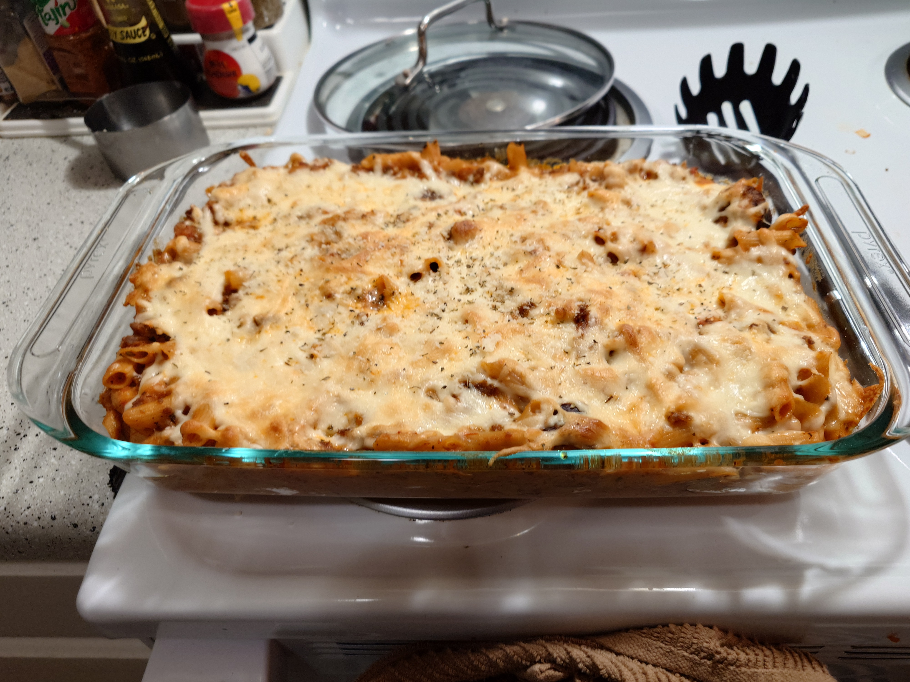

Baked Penne

Description
The quintessential baked pasta dish. Toothfull penne in a
spicy arrabiatta sauce mixed with sausage and ricotta cheese.
Then it is topped by mozzerella and parmasean cheese.
This American version of an Italian dish will make your mouth
water. This recipe was developed for friends and it was so
well received we decided to share it with the world! Enjoy!
Ingredients
- 1 lbs Hot Italian Sausage
- 2 tbsps Olive Oil
- 1 tbsp minced garlic
- 1/2 tbsp red pepper flakes
- 1 cup of your favorite red wine
- 28 ounces of canned crushed tomatoes
- 1 tbsp of dried oregano
- 1 tbsp of dried basil
- 3 bay leaves
- 8 ounces of ricotta cheese
- 1 cup of mozzerella cheese
- salt and pepper to taste
- 2 ounces of parmasean cheese
Steps
- Preheat the oven to 350 F. Heat a 5 qt dutch oven on
medium heat. Brown sausage links, about 5 minutes.
Remove the sausages from the the dutch oven retaining the
fat that remains in the pan. Let the sausage links rest for
about 5 minutes then cut each link into 6 pieces.
- Add additional oil as needed to the heated dutch oven as
needed. Add the garlic and the red pepper flake to the
oil and fry for 30 seconds or until aromatic. Return the
sausage to the pot and saute until fully cooked, about 3
minutes.
-
Add the wine to the pot and reduce until the alcohol is
cooked off, around 3-5 minutes. Add the can of crushed
tomatoes to the pot and reduce the heat to medium low heat.
-
Bring the sauce to a simmer and stir the oregano, basil,
and bay leaves into the sauce. Cover and let the sauce
simmer between 30 - 60 minutes.
-
Bring a pot of salted water to a boil and cook your pasta
according to the box instructions. Cooking times vary
depending on the brand and makeup of the pasta.
-
Strain off the pasta and set aside trying to time the
pasta to be done the same time the sauce is ready.
-
Once the sauce is done add salt to taste. Then add the
ricotta to the sauce, making sure that the ricotta is
dry as any moisture can break the emulsion of the sauce.
If the ricotta is wet pat it dry between two sheets of
paper towels or wring it out in cheese cloth.
-
Stir the cheese into the sauce, making sure it is evenly
distributed in the sauce. Add the pasta and stir to fully
incorporate the pasta.
-
Place the pasta into a casserole dish and sprinkle the
shredded mozzerella cheese on top cooking for 20 minutes.
Once done let the dish cool for 5 minutes.
-
Garnish with parmasean cheese as desired. Enjoy!